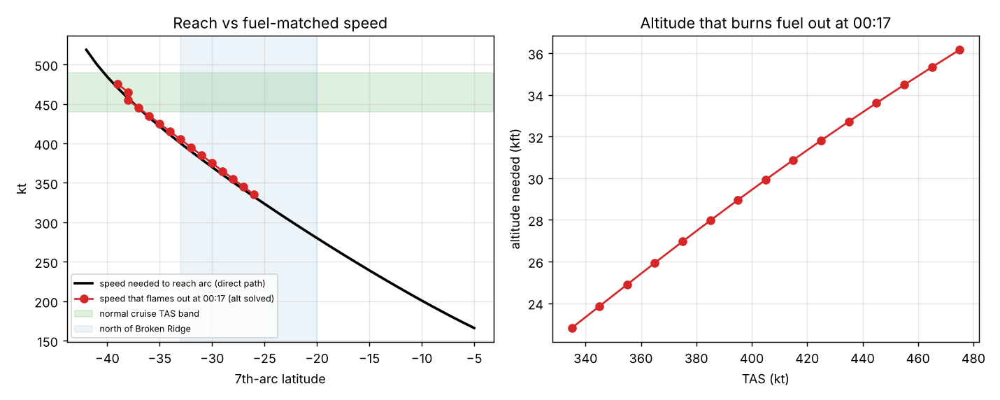
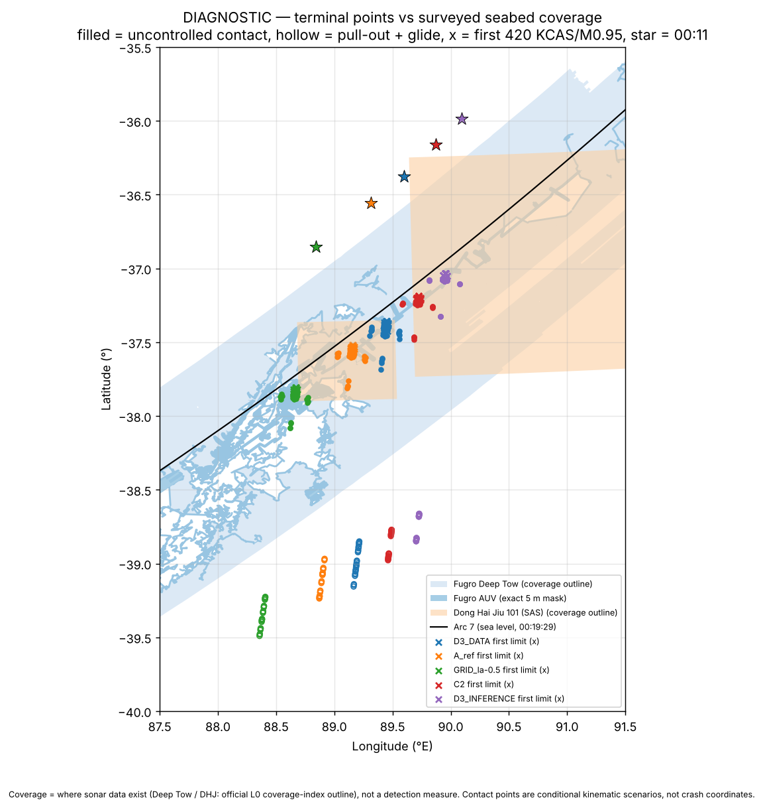
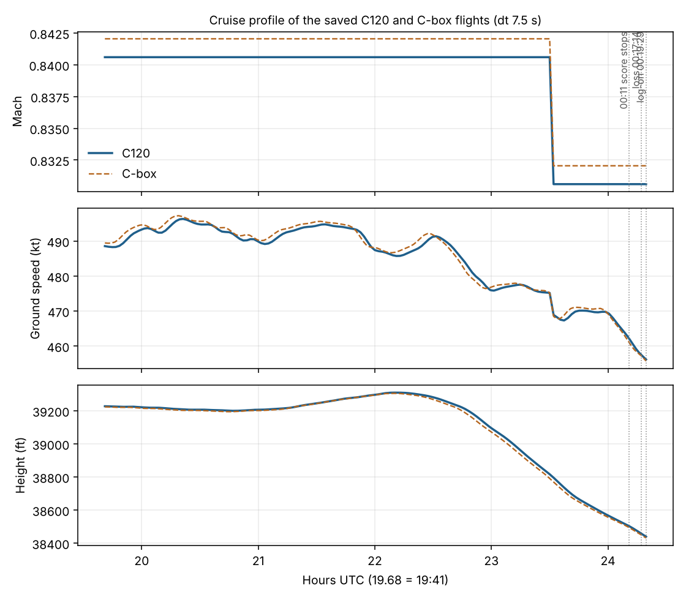
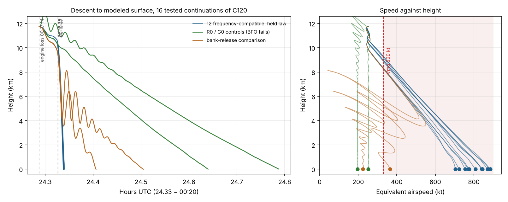
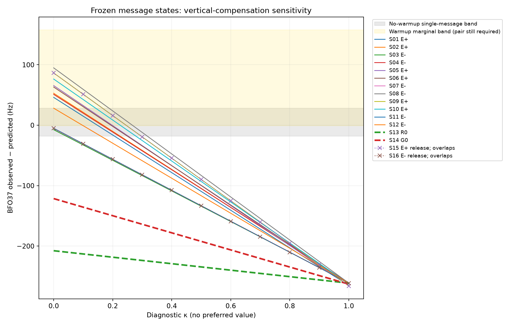
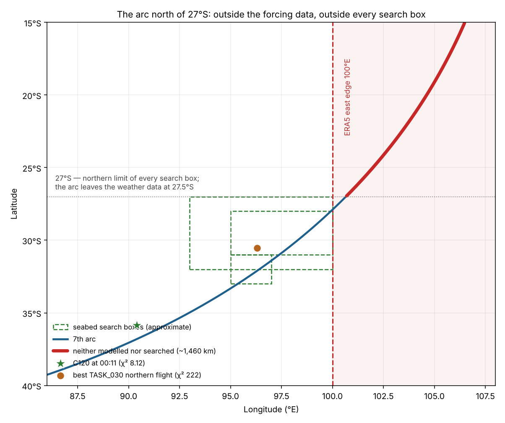

What exists in your archive for the path and endpoint side, with its status. I did not run or rank anything here.
Flies one commanded flight from the 19:41:03 arc-1 start through ERA5 weather with a Boeing 777-200 performance model, scores it against 4 BTO and 5 BFO residuals to 00:11 UTC, and tracks fuel. I ran its verify.py here: all three stored reference flights reproduce (chi² within 1e-11, 00:11 positions and fuel exact). Tracks below are those flights re-flown at dt 7.5 s.

Your figure. The black line is the speed needed to reach the arc on a direct path. Red points are the speeds at which fuel runs out at 00:17 with altitude solved.

Your figure. Coverage is where sonar data exist, not a detection measure. Contact points are conditional kinematic scenarios, not crash coordinates.
Replays of the saved flights with the force model, nine-term score (4 BTO, 5 BFO), fuel profile and k bounds fixed. Both solves start from the P038_C commands. The score stops at 00:11.
| Case | χ² | Δχ² vs U | k | Loss time | Gap to log-on | Position at 00:11 | Fuel at 00:11 | Status |
|---|---|---|---|---|---|---|---|---|
| P038_U (reference) | 7.4948 | – | 1.02689 | 00:14:08 | 320.7 s | −36.526, 89.353 | 301.9 kg | reference |
| P038_C | 7.9141 | +0.419 | – | 00:16:29 | 179.9 s | −35.901, 90.327 | 516.6 kg | guard False |
| C120 | 8.1171 | +0.622 | 1.024738 | 00:17:14 | 134.9 s | −35.848, 90.393 | 585.0 kg | passed guard, stationarity, verification |
| C-box | 7.7633 | +0.269 | 1.024738 | – | 179.9 s | −36.161, 89.917 | 517.6 kg | solve failed (stalled); flight verified |
| Time UTC | Lat, lon | Ground speed | Track | Height |
|---|---|---|---|---|
| 19:41:03 | 0.500, 93.754 | 251.3 m/s (489 kt) | 184.6° | 11,957 m (39,227 ft) |
| 20:41:05 | −7.719, 93.092 | 253.5 m/s | 184.7° | 11,949 m |
| 21:41:27 | −15.967, 92.401 | 254.2 m/s | 184.8° | 11,969 m |
| 22:41:22 | −24.097, 91.660 | 250.7 m/s | 185.1° | 11,959 m |
| 00:11:00 | −35.848, 90.393 | 237.7 m/s (462 kt) | 185.7° | 11,736 m (38,502 ft) |
Mach 0.8406 at the start falling to 0.8306 at 00:11; pressure constant at 214.2 hPa; temperature 223.5 K to 219.2 K; no turn above 1°/min; path length 4,179 km (2,190 nm) from 19:41 to 00:11. C-box is similar (Mach 0.8420 to 0.8320, track 185.2° to 186.5°, path 4,183 km).

582 searched histories from C120’s own engine-loss state, six matched strata (E+ and E− at ΔCD 0, 0.005, 0.015), eight shared seeds. C120 itself was frozen: no parent, fuel, k or engine-loss change. Fitting stops at 00:19:37; the continuation to the surface is then held fixed, not fitted to any location.
Twelve histories reproduce the final frequency pair. Every one of them reaches the water supersonic, far outside the airframe envelope, inside the aerodynamic proxy the model flags as unsupported. The two controls that stay inside the supported aerodynamic domain and arrive at survivable speed miss the 00:19:37 BFO by more than 100 Hz.
| Group | Final BFO pair | Mach at surface | EAS at surface | Descent rate | Aerodynamic domain |
|---|---|---|---|---|---|
| 12 fitted, held law | compatible | 1.06 – 1.33 | 704 – 885 kt | 36,700 – 78,000 ft/min | parabolic proxy (unsupported) |
| R0, G0 controls | fail by 28–48σ | 0.31 – 0.38 | 198 – 252 kt | 1,100 – 1,500 ft/min | clean surrogate (supported) |
| 2 bank-release comparisons | compatible to release | 0.34, 0.55 | 225, 364 kt | 1,700, 4,900 ft/min | parabolic proxy |
A 777’s Vmo is 330 kt and Mmo 0.87. The fitted contacts arrive at 2.1 to 2.7 times Vmo, banked 76° to 89°. Impact states read from each saved contact trajectory.

G0 was horizon-limited at 00:45 in the original run. A follow-up addendum continued the same state with unchanged physics and no refitting. It reaches the surface at 00:47:16 UTC, 38.7059°S 90.4148°E, 1,802 s after engine loss, after 230.3 km of ground path from 11.72 km — a glide ratio near 19.6:1, realistic for a clean 777. It arrives at 198 kt EAS and 1,091 ft/min. The two finest meshes agree to 0.02 m and 7 µs against targets of 100 m and 1 s. Its frequency mismatch is unchanged: it remains a control, not a candidate.
| Outcome | Signed distance to the arc ring (my fit) |
|---|---|
| 12 fitted contacts, held law | +1.4 to −6.6 km |
| Bank-release comparisons | −41 and −46 km |
| R0 control | −141 km |
| G0 control | −167 km |
Positive is inside the ring. G0’s contact lies about 199 km from the fitted cluster, so the spread across tested assumptions is of order 200 km, not the 13 km seen within the held-law group. Distances use my circle fit to the reference arc, which is a 40,000 ft reference compared here against sea-level contacts; they indicate position, not a BTO residual.
The compensation convention was swept with a diagnostic coordinate κ, the fraction of the aircraft’s vertical Doppler removed by the SDU pre-compensation. κ = 0 is the convention in use; κ = 1 makes the BFO insensitive to vertical speed. The sixteen frozen message states were re-scored across the range; no trajectory was re-integrated and no κ was fitted or preferred.
Holland (arXiv 1702.02432v2), sections IV-A and IV-B, describes the SDU calculation as using ground speed and track, zero vertical speed, nominal satellite position and sea-level aircraft position, with the physical Doppler term separately carrying actual vertical motion. That is the convention the model uses. It is documentary support rather than inspected SDU firmware, but it is not an undocumented choice.
The “K-mode OPEN” label that prompted this check turns out to concern historical callers that forced the physical up velocity to zero, and an unavailable cross-lineage specification. The current call path passes physical local up and has no such switch. Earlier wording on this page treated that label as evidence the compensation convention was unvalidated. It was not.

I expected the nine cruise terms to be blind to κ and predicted a circularity argument from that. The curve is measurably non-flat: χ² moves from 8.117071 to 8.119623 across the full range, a span of 0.00255, with a largest BFO change of 0.116 Hz against a listed σBFO of 4.3 Hz. Codex declined to draw the identifiability conclusion I had anticipated, which was the right call: the claim that the cruise data carry no information is not established. In practice a 0.0026 spread in χ² cannot discriminate between conventions, but that is a statement about resolving power, not about information being absent.
| Seconds after log-on | 0 | 7 | 97 | 97 | 101 | 159 | 168 |
|---|---|---|---|---|---|---|---|
| BFO (Hz) | 142 | 273 | 176 | 175 | 172 | 144 | 143 |
Holland identifies the first burst as unreliable on signal quality. Excluding it, the sequence decays by 130 Hz over 161 s — a real excess-then-decay shape of about the magnitude the warm-up envelope allows (17 to 136 Hz). It is not an independent calibration: the raw differences also contain motion, geometry and channel effects, and this event already contributed to the published envelope, so reusing it would reuse evidence. The envelope was not narrowed. Six other log-ons exist in the literature but their burst samples are not in the archived copy.
Seven solutions in this family arrive at 00:11 between 35.85°S and 36.85°S. A forward sweep tested whether anything further north is reachable: commanded inputs swept, 00:11 latitude recorded as an output, no optimiser, no target latitude.
Fuel was never the obstacle. The handshake sequence is. Four sampled commands reach 23.9°S to 26.4°S still powered at 00:11, holding 2.3 to 3.0 tonnes. Their nine-term χ² is 2,507 against C120’s 8.117.
| Handshake | z² | Residual | Range error |
|---|---|---|---|
| 21:41 BTO | 855.4 | 29.2σ | ~127 km |
| 00:11 BTO | 829.8 | 28.8σ | ~125 km |
| 20:41 BTO | 614.5 | 24.8σ | ~108 km |
Range errors are mine, converted from the squared residuals at the listed σBTO of 29 µs.
1,008 commanded flights across 21 arc-1 start points spanning 6°S to 14°N, four bearings, four Mach values, three pressure levels, screened at dt 15 s with every reported profile rerun at 7.5 s. All 21 starts retained; initial-locus BTO residual 1.16×10−10 µs.
WEATHER_HORIZONTAL_OR_TIME_DOMAIN; starts north of 10°N produced no finite history; and the per-start minima piled up at 29.2–31.6°S, which is the edge of the data rather than an optimum. Earlier wording on this page read the northern result as a physical exclusion. It is a coverage limit.
The northern limit of every search box in your manifest is 27°S. The arc leaves the weather data at 27.5°S. Those two boundaries fall within half a degree of each other, leaving roughly 1,460 km of arc, from 27°S to 15°S, that is outside the model's forcing and outside all recorded seabed coverage.
That coincidence is not mysterious. The ERA5 subset was evidently clipped to the region the search already assumed. The consequence is that the model has never been able to challenge the assumption that defined its own inputs.
| Result | Value |
|---|---|
| Rows with all nine score terms | 267 of 1,008 |
| Powered and force-supported through 00:11 | 48 |
| Meeting the declared joint score and fuel bands | 0 |
| Best powered record (start 3°N) | χ² 221.7 at 30.53°S, 96.30°E, 2,643 kg remaining |
| Lowest geometric score (start 6°N) | χ² 112.3 at 31.37°S — fails buffet at the start, not a feasible flight |
| Rows improving C120's 19:41 BFO term (2.901) | 460, of which 48 have supported powered histories |
| Range of verified powered 00:11 latitudes | 24.58°S to 35.48°S |
Part A confirmed that C120's 0.5°N initial latitude is a fitted latitude-box boundary, not an observed latitude; its longitude is then constructed from the 19:41 BTO given that latitude, pressure and datum. The 19:41 BTO is not among the four scored BTOs. Every flight in the family inherits that start, C120 included.
Next: extending ERA5 east to 120°E and north to 20°N is a data acquisition task, not a modelling one, and is the only thing that makes the northern question askable. Until then, no amount of computation can answer it.
97 candidates (96 labelled final handshake position, 1 prior diagnostic coordinate). Search status for all 97 is unknown; the file notes that unknown is not converted to unsearched.
12 terminal-dynamics diagnostic rows from 3 families in one region. selected_as_best and final_coordinate_produced are false for all 12.
One measured radar point (IGARI last SSR, 17:21:13 UTC). The 18:22:12 primary radar report has no coordinates. Search boxes are approximate bounding boxes from your manifest.
Scores are the snapshot's own columns. The satcom score here is that engine's value, not the frozen v06 scorer's. Distance to the reference arc is computed in this page from the arc file's vertices (nearest point, so slightly overstated between vertices). Click a column to sort.
Initial parameters are at the start of the path family; terminal values are at 00:19:29 UTC.